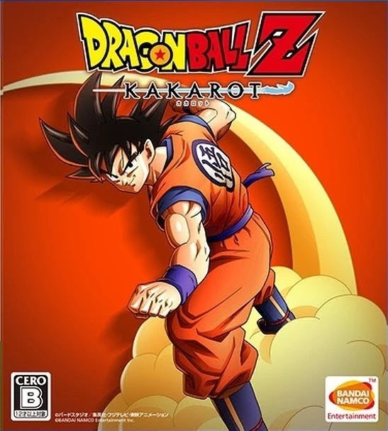

Dragon Ball Xenoverse (ドラゴンボールゼノバース Doragon Bōru Zenobāsu) is the first installment of the Xenoverse series and the Dragon Ball game developed by Dimps for the PlayStation 4, Xbox One, PlayStation 3, Xbox 360, and Microsoft Windows (via Steam).
Dragon Ball Xenoverse (ドラゴンボールゼノバース Doragon Bōru Zenobāsu) is the first installment of the Xenoverse series and the Dragon Ball game developed by Dimps for the PlayStation 4, Xbox One, PlayStation 3, Xbox 360, and Microsoft Windows (via Steam).
The game contains many elements from Dragon Ball Online and Dragon Ball Heroes.
Several in-game cutscenes are also OVA content exclusive to the game.
It is the first fighting game developed by Dimps to feature full 3D battles similar to the Budokai Tenkaichi series.
It was originally known as Dragon Ball New Project,[3] until the actual title was revealed on June 10, 2014.
A sequel, Dragon Ball Xenoverse 2, came out in 2016.
 Dragon Ball Xenoverse 2 (ドラゴンボールゼノバース２ Doragon Bōru Zenobāsu Tsū) is the second installment of the Xenoverse series is a recent Dragon Ball game developed by Dimps for the PlayStation 4, Xbox One, Nintendo Switch and Microsoft Windows (via Steam).
Dragon Ball Xenoverse 2 (ドラゴンボールゼノバース２ Doragon Bōru Zenobāsu Tsū) is the second installment of the Xenoverse series is a recent Dragon Ball game developed by Dimps for the PlayStation 4, Xbox One, Nintendo Switch and Microsoft Windows (via Steam).
It will also be released for PlayStation 5 and Xbox Series X/S as free upgrade on May 24, 2024.
It is the sequel to the original Dragon Ball Xenoverse game.
Dragon Ball FighterZ (ドラゴンボール ファイターズ Doragon Bōru Faitāzu) is a Dragon Ball video game developed by Arc System Works and published by Bandai Namco for PlayStation 4, Xbox One and Microsoft Windows via Steam.
It was released on January 26, 2018 for Japan, North America, and Europe.
It released for Nintendo Switch on September 28, 2018.
Confirmed by Bandai Namco, this game has both Japanese and English dubbing, with the English dubbing being handled by Funimation.
A port for the Nintendo Switch was announced at E3 2018, released on September 28, 2018.
Pre-ordering provided players with Dragon Ball Z: Super Butōden as well as SSGSS Goku and Vegeta.
Open beta began August 10, 2018.
A manga adaptation named Despo FighterZ was released.

Dragon Ball Z: Kakarot (ドラゴンボールＺゼット ＫＡカＫＡカＲＯロＴット Doragon Bōru Zetto Kakarotto) is a Dragon Ball video game developed by CyberConnect2 and published by Bandai Namco for PlayStation 4, Xbox One, and Steam which was released on January 17, 2020.
It was released for the Nintendo Switch on September 24, 2021.
It was also released for Xbox Series X/S and PlayStation 5 as standalone and free upgrade on January 12, 2023, in Japan.
It was also released in Europe and North America on January 13, 2023.
It is an action role-playing game that allows the player to take control of Goku and his friends through different iconic events in the Dragon Ball Z story, ranging from the start of the Saiyan Saga to the end of the Majin Buu Saga.
The Super Saiyan God form, along with Beerus and Whis, was added in the DLC expansion New Power Awakens - Part 1.
The Super Saiyan Blue form, along with Golden Frieza, was added in New Power Awakens - Part 2.
The game adds to lore not included in the original manga/anime,[2][3] including new explanations on Animal-type Earthlings and on Saiyan tails.[4] It also includes an original character designed by Akira Toriyama himself, Bonyu.[5] The material added by Toriyama is canon to the main story line of Dragon Ball.
This game also features remixed excerpts of Shunsuke Kikuchi's soundtrack from the original Japanese broadcast of the Dragon Ball Z anime.
Dragon Ball Legends (ドラゴンボール レジェンズ Doragon Bōru Rejenzu) is a mobile game for Android and iOS.